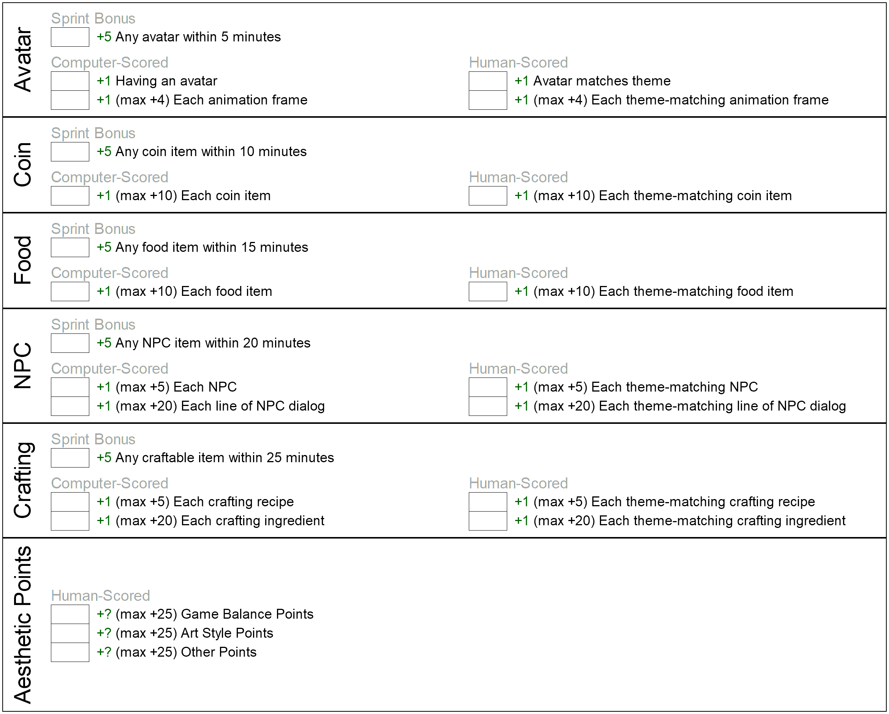

Practice Game Jam Katas - (Day 7)
1 Paper Practice Kata
Teaching Tip: Students should start coding this first and then they can customize their game.
To earn this kata they need to:
Code a simple survival game in under 25 minutes.
#lang ts-game-jam-1 (survival-game #:avatar (custom-avatar) #:coin-list (list (custom-coin)) #:food-list (list (custom-food #:amount-in-world 10)) #:npc-list (list (custom-npc)) #:crafter-list (list (custom-crafter)))
If they complete this in less than 25 minutes during game jam they would earn the following number of points:
Avatar: +1 Having an avatar +5 in less than 5 minutes = 6 points.
Coin: +1 Having a coin +5 in less than 10 minutes = 6 points.
Food: +1 Having a food item +5 in less than 15 minutes = 6 points.
NPC: +1 Having an NPC +5 in less than 20 minutes = 6 points.
Crafter: +1 Having a crafter +5 in less than 25 minutes = 6 points.
Total so far: +30 points.
2 Avatar Practice
To earn this kata  they need to:
Customize their avatar.
#lang ts-game-jam-1
(define (my-avatar) (custom-avatar #:sprite (sheet->sprite #:columns 4))) (survival-game #:avatar (my-avatar) #:coin-list (list (custom-coin)) #:food-list (list (custom-food #:amount-in-world 10)) #:npc-list (list (custom-npc)) #:crafter-list (list (custom-crafter)))
With this new code you would get the following points:
Avatar: +4 for animation frames (1 point per frame).
Total so far: +34 points.
3 Coin Practice
To earn this kata  they need to:
they need to:
Code and customize additional coins.
#lang ts-game-jam-1 (define (my-avatar) (...)) (define (red-coin) (custom-coin #:sprite (circle 5 'solid 'red) #:name "red coin" #:amount-in-world 6 #:value 20 )) (define (blue-coin) (custom-coin #:sprite (circle 5 'solid 'blue) #:name "blue coin" #:amount-in-world 4 #:value 40 )) (define (green-coin) (custom-coin #:sprite (circle 5 'solid 'green) #:name "green coin" #:amount-in-world 2 #:respawn? #f #:value 60 )) (survival-game #:avatar (my-avatar) #:coin-list (list (red-coin) (blue-coin) (green-coin)) #:food-list (list (custom-food #:amount-in-world 10)) #:npc-list (list (custom-npc)) #:crafter-list (list (custom-crafter)))
With this new code you would get the following points:
Coin: +2 for coins (1 point per coin; we already had points for one coin).
Coin: +3 for coins matching theme (1 point per coin).
Total so far: +39 points.
Additional possible points: +14; code 7 additional theme matching coins.
4 Food Practice
To earn this kata they need to:
Code and customize additional food items.
#lang ts-game-jam-1 (define (my-avatar) (...)) (define (red-coin) (...)) (define (blue-coin) (...)) (define (green-coin) (...)) (define (pineapple) (custom-food #:sprite (star 5 'solid 'yellow) #:name "pineapple" #:heals-by 5 #:amount-in-world 10)) (define (mango) (custom-food #:sprite (star 5 'solid 'orange) #:name "mango" #:heals-by 50 #:amount-in-world 1 #:respawn? #f)) (survival-game #:avatar (my-avatar) #:coin-list (list (red-coin) (blue-coin) (green-coin)) #:food-list (list (pineapple) (mango)) #:npc-list (list (custom-npc)) #:crafter-list (list (custom-crafter)))
With this new code you would get the following points:
Food: +1 for food item (1 point per food; we already had points for one food item).
Food: +2 for food items matching theme (1 point per food item).
Total so far: +42 points.
Additional possible points: +16; code 8 additional theme matching food items.
5 NPC Practice Kata
To earn this kata they need to:
Code and customize additional NPCs.
#lang ts-game-jam-1 (define (my-avatar) (...)) (define (red-coin) (...)) (define (blue-coin) (...)) (define (green-coin) (...)) (define (pineapple) (...)) (define (mango) (...)) (define(my-npc-1) (custom-npc #:position (posn 100 100) #:tile 1 #:name "Sara" #:mode 'pace #:dialog (list "Hello!" "I'm busy right now." "Bye!"))) (define(my-npc-2) (custom-npc #:position (posn 100 200) #:tile 2 #:name "Sonny" #:mode 'wander #:dialog (list "I'm hungry!" "I can't find any food."))) (survival-game #:avatar (my-avatar) #:coin-list (list (red-coin) (blue-coin) (green-coin)) #:food-list (list (pineapple) (mango)) #:npc-list (list (my-npc-1) (my-npc-2)) #:crafter-list (list (custom-crafter)))
With this new code you would get the following points:
NPC: +1 for an NPC (1 point per NPC; we already had points for one NPC).
NPC: +2 for NPCs matching theme (1 point per NPC).
NPC: +5 for lines of dialog (1 point per line).
NPC: +5 for lines of dialog matching theme (1 point per line).
Total so far: +50 points.
Additional possible points: +33; code 3 additional NPCs, and add 15 lines of theme matching dialog.
6 Crafter Practice Kata
To earn this kata  they need to:
they need to:
Code and customize additional crafters.
#lang ts-game-jam-1 (define (my-avatar) (...)) (define (red-coin) (...)) (define (blue-coin) (...)) (define (green-coin) (...)) (define (pineapple) (...)) (define (mango) (...)) (define(my-npc-1) (...)) (define(my-npc-2) (...)) (define (kiwi) (custom-food #:sprite (star 5 'solid 'brown) #:name "kiwi" #:heals-by 50 )) (define (frozen-pineapple) (custom-food #:sprite (star 10 'solid 'yellow) #:name "frozen pineapple" #:heals-by 15 )) (define kiwi-recipe (recipe #:product (kiwi) #:build-time 5 #:ingredients (list "pineapple" "mango") )) (define mango-recipe (recipe #:product (mango) #:build-time 10 #:ingredients (list "pineapple") )) (define frozen-pineapple-recipe (recipe #:product (frozen-pineapple) #:build-time 15 #:ingredients (list "pineapple") )) (define (oven-crafter) (custom-crafter #:menu (crafting-menu-set! #:recipes kiwi-recipe mango-recipe) #:tile 1)) (define (freezer-crafter) (custom-crafter #:menu (crafting-menu-set! #:recipes frozen-pineapple-recipe) #:tile 2)) (survival-game #:avatar (my-avatar) #:coin-list (list (red-coin) (blue-coin) (green-coin)) #:food-list (list (pineapple) (mango) (kiwi) (frozen-pineapple)) #:npc-list (list (my-npc-1) (my-npc-2)) #:crafter-list (list (oven-crafter) (freezer-crafter)))
With this new code you would get the following points:
Food: +2 for food item (1 point per food item).
Food: +2 for food items matching theme (1 point per food item).
Crafter: +1 for a crafter (1 point per crafter; we already had points for one crafter).
Crafter: +3 for recipes (1 point per recipe).
Crafter: +3 for recipes matching theme (1 point per recipe).
Total so far: +61 points.
Additional possible points: +27; code 3 additional crafter, and add 12 more theme matching recipes.